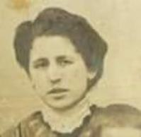
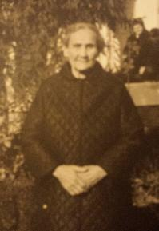
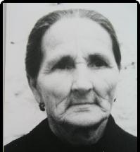
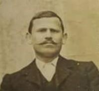

|
 ARIAS CARRILLO, ADELA (° +)
ARIAS CARRILLO, ADELA (° +)
 ARIAS CARRILLO, ADELA (I00101) ARIAS CARRILLO, ADELA (I00101)
|
mama_ton2.jpg
mama_ton2.jpg
ARIZA ARIZA, CONCEPCIÓN (I00040)
(23 Oct 1907 - 31 Ene 1975)
|
ARIZA ARIZA, DOLORES (° +)
ARIZA ARIZA, DOLORES (° +)
ARIZA ARIZA, DOLORES (I00118)
(28 Dic 1926)
|
 frasquito.jpg frasquito.jpg
frasquito.jpg
 ARIZA ARIZA, FRANCISCO (I00114) ARIZA ARIZA, FRANCISCO (I00114)
|
ARIZA ARIZA, IGNACIO (° +)
ARIZA ARIZA, IGNACIO (° +)
ARIZA ARIZA, IGNACIO (I00115)
|
ARIZA ARIZA, TERESA (° +)
ARIZA ARIZA, TERESA (° +)
ARIZA ARIZA, TERESA (I00119)
(3 Mar 1930)
|
|
 ARIZA BENÍTEZ, DOLORES (°1882 +May 1974)
ARIZA BENÍTEZ, DOLORES (°1882 +May 1974)
ARIZA BENÍTEZ, DOLORES (I00111)
(1882 - May 1974)
|
papa_silverio2.jpg
papa_silverio2.jpg
ARIZA BURGOS, CALISTO SILVERIO DE SAN CLEMENTE (I00074)
(23 Nov 1885 - May 1962)
|
 mama_anica.jpg
mama_anica.jpg
ARIZA MOYANO, ANA (I00024)
(1894 - Ene 1985)
|
ARIZA MOYANO, ANA (I00024)
(1894 - Ene 1985)
|
ARIZA MOYANO, ANA (I00024)
(1894 - Ene 1985)
|
ARTACHO RUANO, MARÍA DEL CARMEN (° +)
ARTACHO RUANO, MARÍA DEL CARMEN (° +)
ARTACHO RUANO, MARÍA DEL CARMEN (I00031)
|
BENÍTEZ ARIAS, ANTONIO DEMETRIO (°6 Jun 1907 +21 Jul 1936)
BENÍTEZ ARIAS, ANTONIO DEMETRIO (°6 Jun 1907 +21 Jul 1936)
BENÍTEZ ARIAS, ANTONIO DEMETRIO (I00104)
(6 Jun 1907 - 21 Jul 1936)
|
BENÍTEZ ARIAS, AURORA (° +)
BENÍTEZ ARIAS, AURORA (° +)
BENÍTEZ ARIAS, AURORA (I00108)
|
BENÍTEZ ARIAS, EMILIO (° +)
BENÍTEZ ARIAS, EMILIO (° +)
BENÍTEZ ARIAS, EMILIO (I00105)
|
papa_gonzalo.jpg
papa_gonzalo.jpg
BENÍTEZ ARIAS, JOSÉ (GONZALO) (I00039)
(13 Oct 1899 - 20 Feb 1991)
|
tita_adela.jpg
tita_adela.jpg
BENÍTEZ ARIZA, ADELA (I00043)
(7 Nov 1938 - 20 Nov 2021)
|
tito_antonio.jpg
tito_antonio.jpg
BENÍTEZ ARIZA, ANTONIO (I00038)
(11 Nov 1932 - 27 Abr 2017)
|
mama.jpg
mama.jpg
BENÍTEZ ARIZA, AURORA (I00007)
(12 Jul 1934 - 18 Feb 2000)
|
dolorcitas.jpg
dolorcitas.jpg
BENÍTEZ ARIZA, DOLORES (I00044)
(1946 - 28 Feb 2022)
|
 BENÍTEZ HINOJOSA, JUAN ANTONIO DE SAN IGNACIO (°31 Jul 1872 +)
BENÍTEZ HINOJOSA, JUAN ANTONIO DE SAN IGNACIO (°31 Jul 1872 +)
BENÍTEZ HINOJOSA, JUAN ANTONIO DE SAN IGNACIO (I00091)
(31 Jul 1872)
|
") CHIVITE PÉREZ, JESÚS (°7 Abr 1961 +) CHIVITE PÉREZ, JESÚS (°7 Abr 1961 +)
CHIVITE PÉREZ, JESÚS (°7 Abr 1961 +)
CHIVITE PÉREZ, JESÚS (I00002)
(7 Abr 1961)
|
") CHIVITE RUANO, GERMÁN (°5 May 1993 +) CHIVITE RUANO, GERMÁN (°5 May 1993 +)
CHIVITE RUANO, GERMÁN (°5 May 1993 +)
CHIVITE RUANO, GERMÁN (I00003)
(5 May 1993)
|
 ines_2.jpg ines_2.jpg
ines_2.jpg
CHIVITE RUANO, INÉS (I00005)
(3 May 2002)
|
 martin.jpg martin.jpg
martin.jpg
CHIVITE RUANO, MARTÍN (I00004)
(4 Mar 1997)
|
 tito_francisco.jpg tito_francisco.jpg
tito_francisco.jpg
CORTÉS REPISO, FRANCISCO (I00045)
(13 Feb 1934 - 4 Ene 2014)
|
") MOYANO, JUAN (° +) MOYANO, JUAN (° +)
MOYANO, JUAN (° +)
MOYANO, JUAN (I00203)
|
") RUANO AGUILERA, JOSEFA (° +) RUANO AGUILERA, JOSEFA (° +)
RUANO AGUILERA, JOSEFA (° +)
RUANO AGUILERA, JOSEFA (I00034)
|
 papa.jpg papa.jpg
papa.jpg
RUANO ARIZA, ANTONIO (I00006)
(1 Ene 1927 - 11 Abr 2019)
|
 tito_jose.jpeg tito_jose.jpeg
tito_jose.jpeg
RUANO ARIZA, JOSÉ (I00027)
|


 "frasquito.jpg")
 "CHIVITE PÉREZ, JESÚS (°7 Abr 1961 +)")
 "CHIVITE RUANO, GERMÁN (°5 May 1993 +)")
 "ines_2.jpg")
 "martin.jpg")
 "tito_francisco.jpg")
 "MOYANO, JUAN (° +)")
 "RUANO AGUILERA, JOSEFA (° +)")
 "papa.jpg")
 "tito_jose.jpeg")
){kind=link}
){kind=link}
){kind=link}
){kind=link}
){kind=link}
){kind=link}
){kind=link}
){kind=link}
){kind=link}
){kind=link}
){kind=link}
){kind=link}
){kind=link}
){kind=link}
){kind=link}
){kind=link}
){kind=link}
){kind=link}